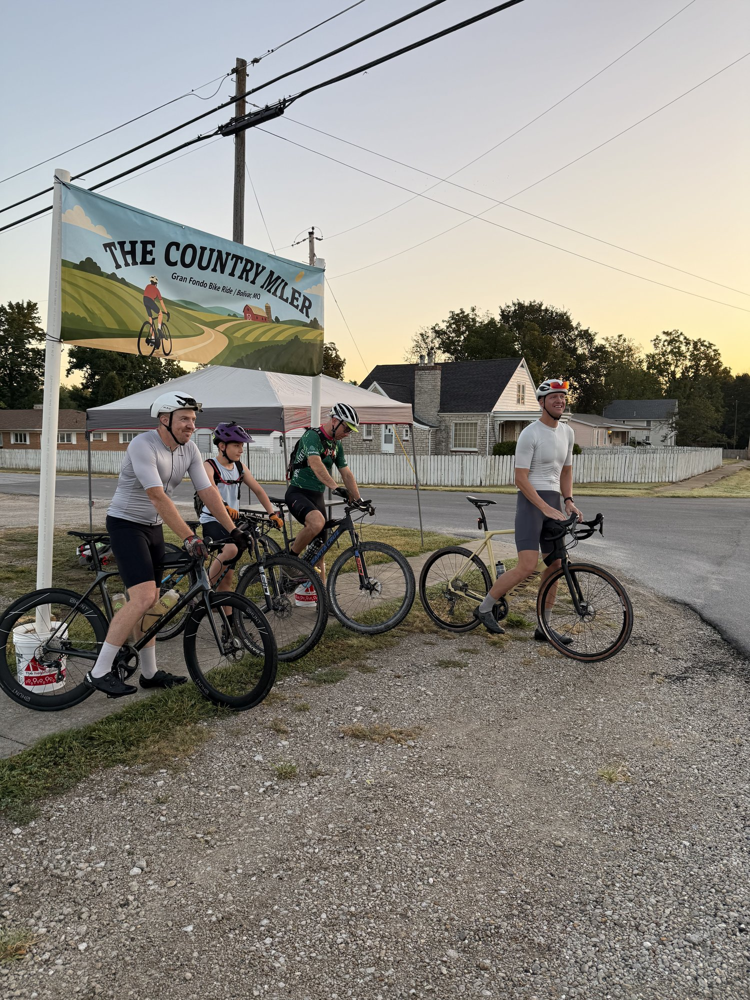
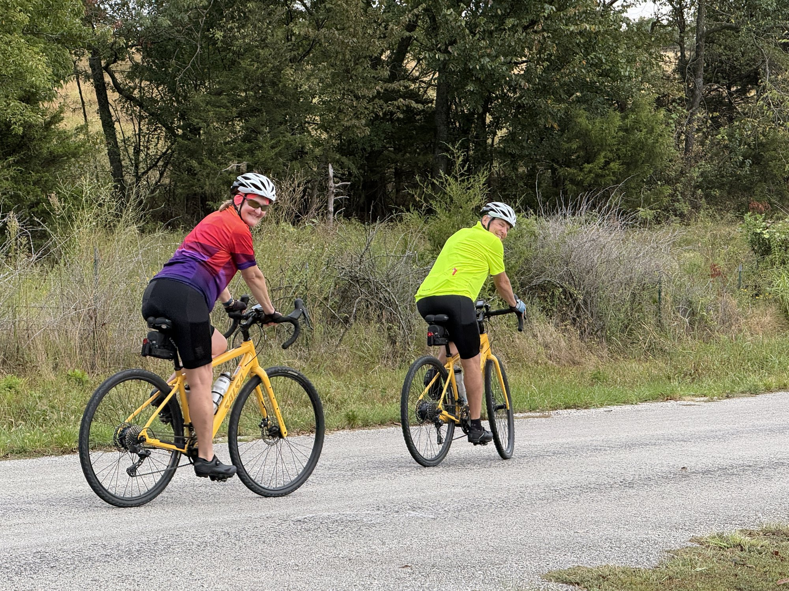
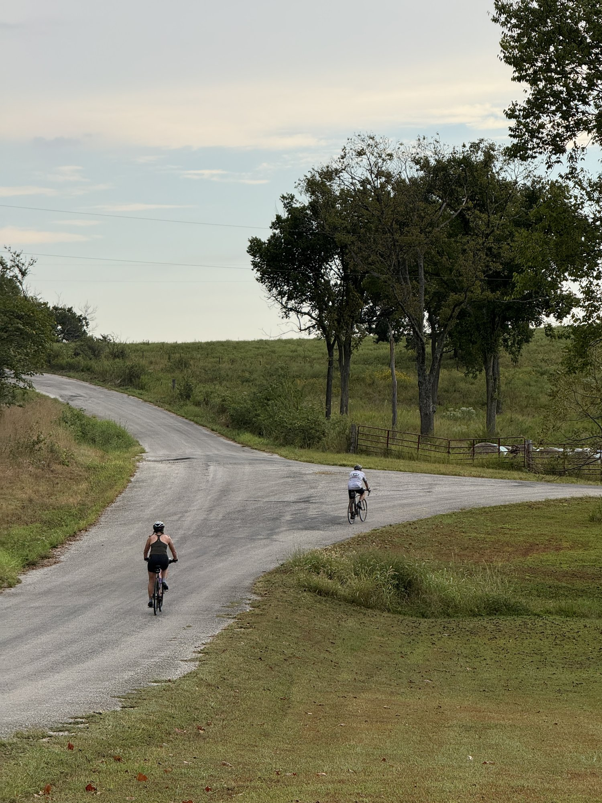
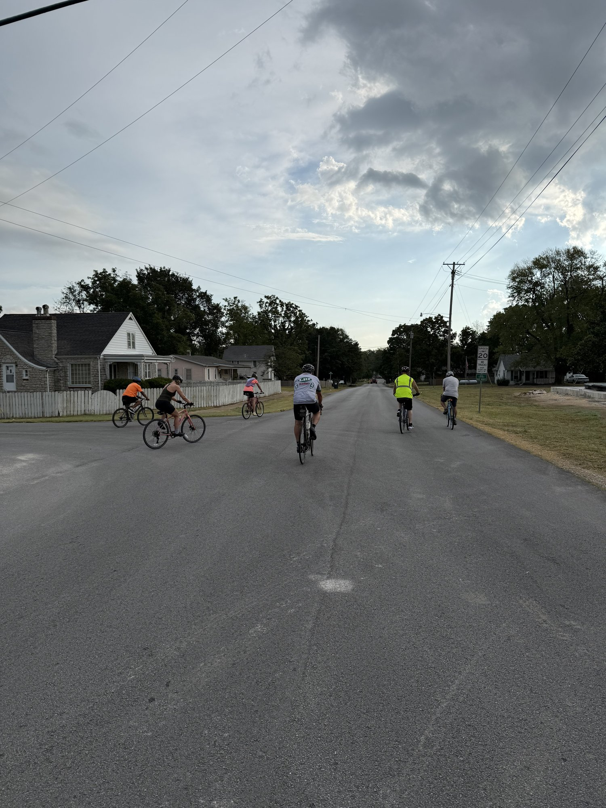
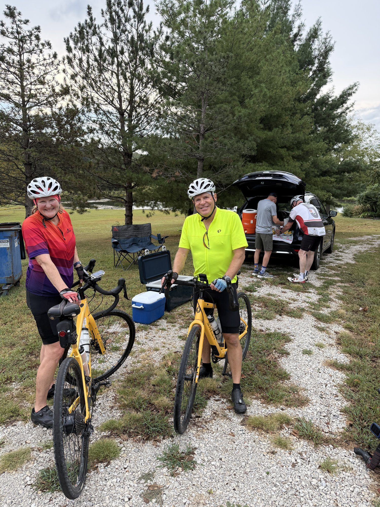
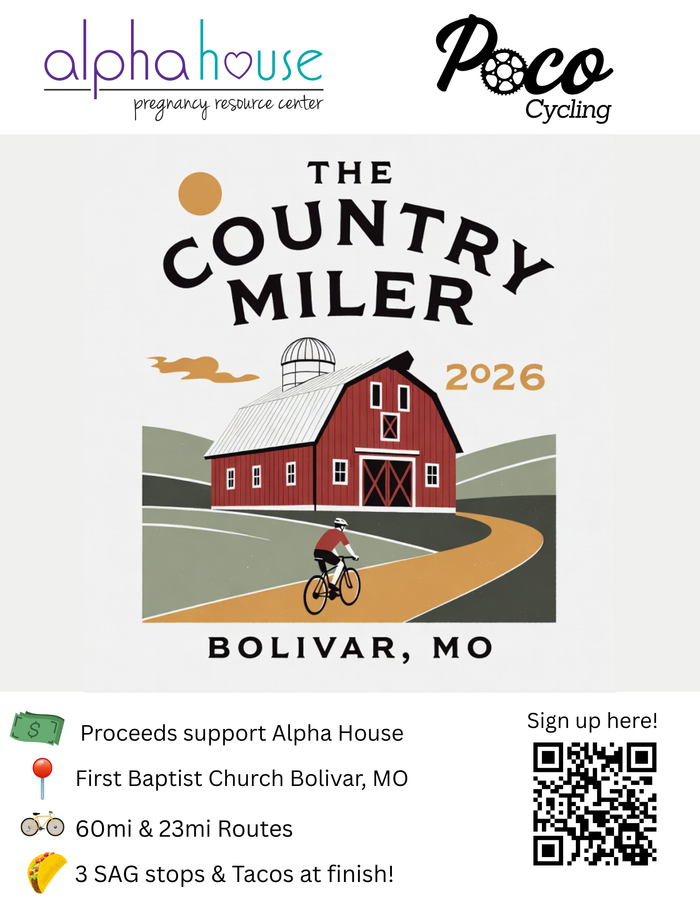

2026 · Thank you, riders
The Country Miler thank you
What a ride. PoCo’s signature gran fondo rolled out on Polk County country roads — supported miles, club volunteers, and a finish-line welcome. Proceeds supported Alpha House.
Country Miler 2026
Riders, roads, and start-line energy from this year’s gran fondo.





From the course
A short taste of Country Miler energy on Polk County country roads — muted clip, play when you’re ready.

Start line
Riders rolled out from First Baptist Church, Bolivar — the 60-mile / ~100k at 7:00 am and the 23-mile at 8:30 am. Quiet country roads around Polk County, club volunteers, and that special gran fondo mix of challenge and camaraderie.
Routes
The 2026 courses are still open to ride — load them up and take the Country Miler roads anytime.
- 60-mile — the full Country Miler experience for endurance riders
- 23-mile — a welcoming shorter option for newer riders and mixed groups
Ride either course from the Strava route or load the GPX into your head unit. Three SAG stops kept bottles full and spirits high on event day.
Why we ride
In 2026 we raised $500 for Alpha House Pregnancy Resource Center. Every registration and sponsorship helped neighbors in our community. Riding for a cause is core to PoCo’s identity.
What made the day
- Marked / supported courses
- Three SAG stops with water & snacks
- Finish-line tacos
- A warm club welcome — not a race-only vibe
Save the date
Country Miler 2027
First Saturday after Labor Day · Saturday, September 11, 2027
Routes, start location, and signup details are still TBA. We’ll share more as plans firm up.